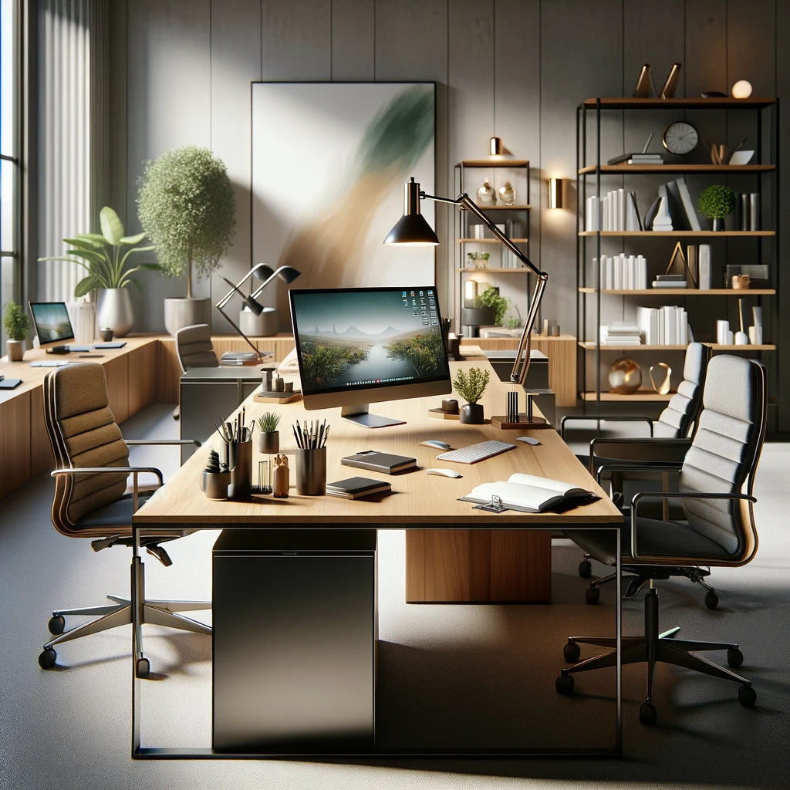

<section class="text-gray-600 body-font">
    <div class="flex md:flex-row flex-col items-center mx-auto px-5 py-24 container">
        <div class="flex flex-col lg:flex-grow items-center md:items-start mb-16 md:mb-0 md:pr-16 lg:pr-24 md:w-1/2 text-center md:text-left">
            <h1 class="mb-4 font-medium text-3xl text-gray-900 sm:text-4xl title-font">
                The web dev agency that
                <br class="lg:inline-block hidden">
                puts you at the center
            </h1>
            <p class="mb-8 leading-relaxed">
                Mattrika Technologies is a pioneering web development company that stands out in the crowded digital landscape with its unique client-centric approach.
            </p>
            <!-- <div class="flex justify-center">
                <button class="inline-flex border-0 bg-green-500 hover:bg-green-600 px-6 py-2 rounded text-lg text-white focus:outline-none">Button</button>
                <button class="inline-flex border-0 bg-gray-100 hover:bg-gray-200 ml-4 px-6 py-2 rounded text-gray-700 focus:outline-none text-lg">Button</button>
            </div> -->
        </div>
        <div class="w-5/6 md:w-1/2 lg:w-full lg:max-w-lg">
            
        </div>
    </div>
</section>
